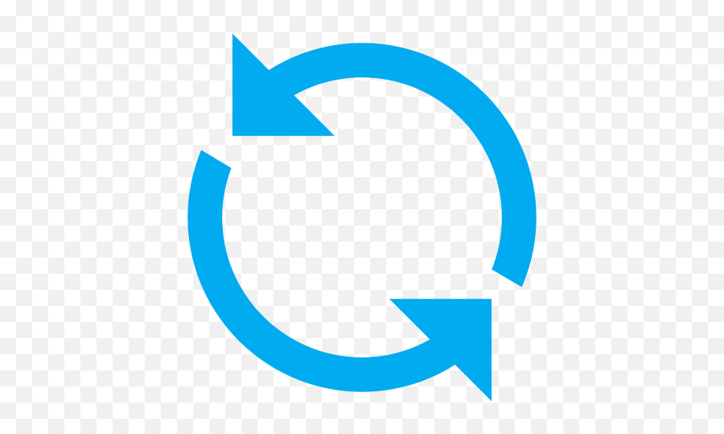

<nav class="navbar navbar-light bg-light">
  <div class="container-fluid">
    <a class="navbar-brand" href="#">
      
    </a>
    <div *ngIf="userLoggedIn; else userloggedOut">
      <form class="d-flex">
        <a routerLink="/pending-my-signature" routerLinkActive="active" class="btn btn-outline-secondary me-3" role="button">Pendents de la meva signatura</a>
        <a routerLink="/pending-other-signatures" routerLinkActive="active" class="btn btn-outline-secondary me-3" role="button">Pendents d'altres signatures</a>
        <a routerLink="/processed" routerLinkActive="active" class="btn btn-outline-secondary me-3" role="button">Processades</a>
        <button (click)="refresh()" class="btn me-3" role="button">
          
        </button>
      </form>
    </div>
    <ng-template #userloggedOut>
      <form class="d-flex">
        <a routerLink="/login" routerLinkActive="active" class="btn btn-outline-secondary me-3" role="button">Inicia la sessió</a>
        <a routerLink="/register" routerLinkActive="active" class="btn btn-outline-primary me-3" role="button">Registra't gratuïtament</a>
      </form>
    </ng-template>
  </div>
</nav>
<router-outlet></router-outlet>
